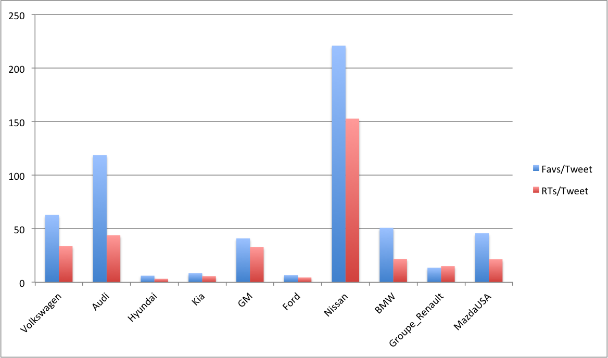

Twitter is used as a networking platform both by CSR practitioners along with researchers interested in the area. Additionally, many consumers interact with brands on Twitter, and use it as a platform to learn about companies, petition for customer service, or simply to ask questions about products and brands. To learn about the extent to which companies themselves use Twitter to these ends, I examined the tweets of 10 car companies in order to see which of them had the most reach among people concerned with environmental protection. I chose the automobile industry as gasoline powered vehicles make up a significant portion of our emissions.
The methodology I used was a dictionary based approach, searching for all tweets that included the words or phrases "electric", "hybrid", "mileage", "emission", "emissions", "waste", "sustainable", "sustainability", "carbon dioxide", "carbon emissions", "co2", "climate change", and "pollution." I measured how many favorites and retweets each company received divided by the total number of tweets relating to this topic, to obtain a “favorites per tweet” and “retweets per tweet” metric of a brand’s reach on Twitter. By comparing these figures, we can get a handle on which car companies get the most attention on their CSR tweets.
| Company | Favs/Tweet | RTs/Tweet |
|---|---|---|
| Volkswagen | 38.07692308 | 38.61538462 |
| Audi | 186.5 | 70.66666667 |
| Hyundai | 20.28571429 | 12.89285714 |
| Kia | 11.55555556 | 7.472222222 |
| GM | 33.42553191 | 29.63829787 |
| Ford | 45.45 | 22.8 |
| Nissan | 52.25531915 | 33.42553191 |
| BMW | 49.9 | 48.6 |
| Groupe_Renault | 9.057142857 | 13.40571429 |
| MazdaUSA | 1.375 | 4.25 |
The company that had the best overall figures for the tweets that it made regarding these topics was by fair Audi, with a tremendous 186.5 favorites and 70.7 retweets per tweet they made. Mazda, Kia, and Renault placed low, with the remaining companies making up the "main group" of average results.
When I started this project, it was with the aim of separating “sustainability tweets” into two groups, one that was big picture (climate change, sustainability) and one that was smaller in scope (electric cars, emissions) and determining which strategy was more effective. However, a small sample of companies found remarkably few big picture tweets at all, let alone enough to make a reasonable comparison. I decided instead to determine which companies made the most effective use of Twitter as a platform.
It appears that the majority of these companies do tweet out CSR messages that reach an audience, with the exception perhaps of Renault, Kia, and Mazda, the three companies with the lowest reach. Additionally, some of these companies are significantly outperforming the others, particularly Audi. It is worth examining what it is that separates Audi from the rest of the pack, and also why the messages of the 3 underperformers are missing their mark. I pulled down statistics on all of the companies tweets, not just the sustainability related ones, to compare.
If you look, Audi is still a high performer here. However, its favorites and retweets per tweet are about half of what Nissan's are. Yet, Nissan doesn't have the same success with sustainability tweets. The largest and most popular companies here have the most active Twitter followings, but Audi alone stands above the rest in reaching a target with it's CSR tweets.